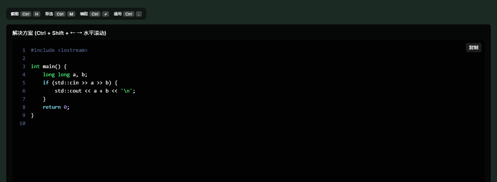
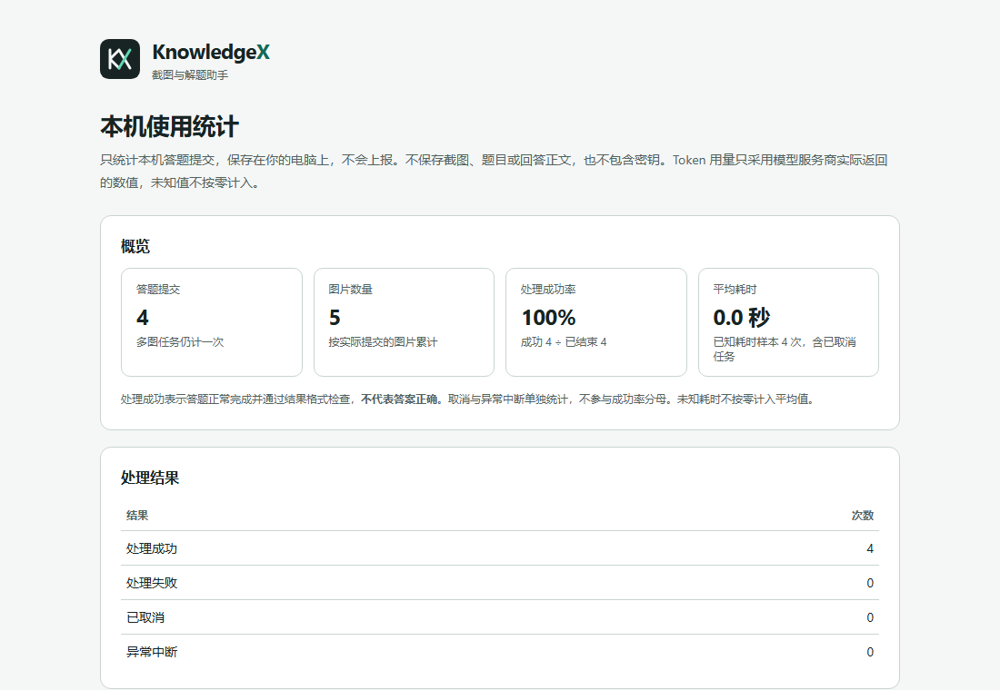
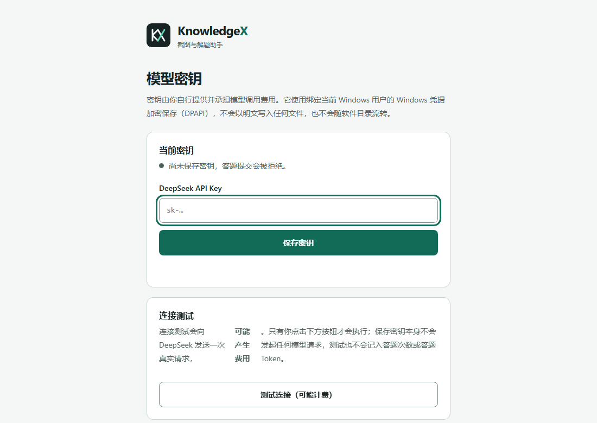

本地运行，意味着什么
- 密钥不出本机
- API Key 由你自己填写，经 Windows DPAPI 绑定当前用户加密，密文保存在用户数据目录。日志、统计、导出和分发包里都不会出现密钥。
- 截图与回答不落盘
- 服务端不保存截图、题目或回答正文。进行中的答案只在内存里短期保留，用于断线重连，终态约五分钟后清理。
- 每次请求独立
- 失败不自动重试，也不回退到原服务。取消会中止本地到上游的连接；已经发出的请求不会撤回。
- 只监听回环地址
- 服务绑定
127.0.0.1:8787，不对外提供端口。本机会话仍需认证，管理接口不接受匿名调用。
五种题目，同一套流程
截图后按模式提交，同一次可带多张图片，仍算一次提交。
-
int main() { long long a, b; std::cin >> a >> b; std::cout << a + b; }编程
优先遵循题目指定的语言；未指定时使用 C++17，返回可运行的完整代码与复杂度说明。
-
Debug
沿用截图里的代码语言定位问题。
-
单选
给出选项与依据，便于核对。
-
多选
逐项判断，标明取舍。
-
通用问答
不限于题目，直接回答截图内容。
看得见的部分

本机使用统计
提交次数、处理结果、耗时和模型实际返回的 Token 用量，只写入本机文件，不上报。未知的数值保持未知，不按零计入。
- 按提交时所在时区归档，默认查看近七日
- 逐次明细保留 90 天，日汇总长期保留
- 可导出日汇总与任务明细 CSV

从零到第一次提问
需要 Node.js 22 或更新版本，运行后端和离线测试都不需要安装 npm 依赖。补丁会修改本机已安装的客户端，执行前请先关闭它。
补丁锁定当前原版哈希；未知或已被其他程序修改的包会被拒绝。恢复命令保留原始备份。
启动服务
npm start打开 http://127.0.0.1:8787/login 完成本地登录。
保存密钥
http://127.0.0.1:8787/settings填写 DeepSeek API Key，保存即加密；不填仍可进入，但不能答题。
应用补丁
npm run patch:check
npm run patch:apply先检查版本匹配，再备份并修改客户端。需要撤销时执行 npm run patch:restore。
没验证的部分，也写在这里
下面是当前发布状态下的已知边界。它们不会因为其他验收通过而自动算作通过。
- 干净安装的 Windows 10 / 11 尚未验证
- 真实客户端窗口、托盘与热键未进入自动化验收
- 跨 Windows 用户的解密行为未执行
- 物理截图与桌面捕获未覆盖，测试使用合成题图
- 真实模型请求的验收预算已用完，全链路暂不可重复
- 模拟模型通过不等于真实答题通过